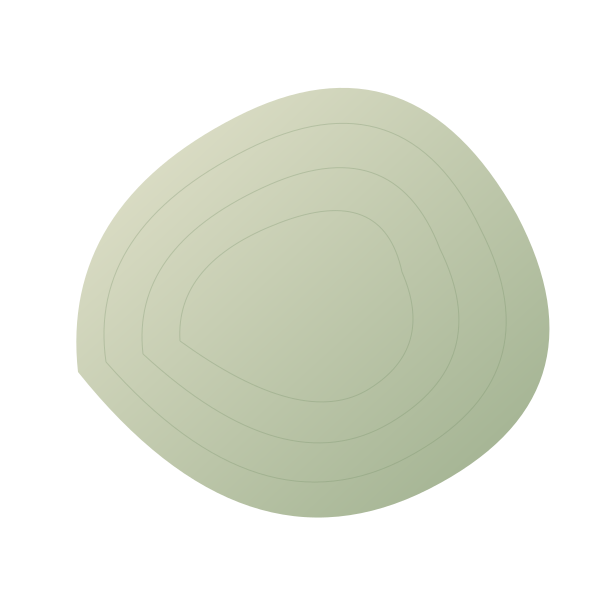
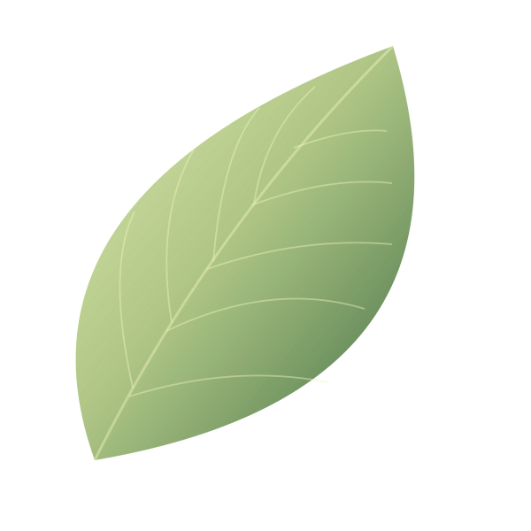

LIVING LIGHT MATERIAL / SPACE / STILLNESS
An exercise in attention
Room
to breathe.
A little light.
A little space.
A different pace.


LIGHT THROUGH MATTER
A little light.
A little space.
A different pace.

